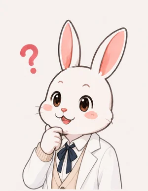

STAGE 8
TCPとUDP
ポート番号と、確実に届ける工夫
🎯 ミッション
ポート番号の役割と、TCP が確実に届けるしくみ（ハンドシェイク・確認応答・再送）、UDP との違いを説明できるようになろう。TCP のやり取りを最後まで追い、確認クイズに全問正解すれば合格。
未達成

ねこ博士
IP アドレスで、パケットは相手の機械まで届く。でも、1台の機械の中では、ブラウザもメールもゲームも同時に動いている。届いたデータを、どのアプリに渡せばいい？

うさ美
マンションの住所だけでは足りなくて、部屋番号が要る、という感じですね。
ねこ博士
そう。その部屋番号がポート番号だ。0〜65535 の数で、よく使うサービスには決まった番号がある。Web（HTTP）は80、暗号つきの Web（HTTPS）は443、メールの送信は587、などだ。送る側のアプリにも、その場で空いている番号（49152 以上など）が割り当てられ、返事はそこに届く。
あて先の指定 ＝ IP アドレス（どの機械か）＋ ポート番号（その中のどのアプリか）
例：93.184.215.14 の 443 番 ＝ example.com の Web サーバー（HTTPS）
ねこ博士
さて、インターネットのパケットは、途中で消えることもあるし、別々の道を通って順番が入れ替わることもある。Web ページのように、1文字でも欠けたら困るデータを送るにはどうする？
うさ美
届いたかどうかが送った側に分からないのが困るんですよね。受け取った側に、返事をしてもらうとか……？
ねこ博士
そう。受け取ったら「届いた」と返事をし、返事が来なければ送り直す。データに通し番号を付けておけば、入れ替わった順番も並べ直せる。それを決まりにしたのが TCP（Transmission Control Protocol）だ。まず、送る前に3回やり取りして、お互いに準備ができたことを確かめる。これを3ウェイハンドシェイク（3回の握手）と呼ぶ。
① SYN：「つないでいい？ 私の番号はここから始める」
② SYN-ACK：「いいよ。きみの番号は受け取った。私の番号はここから」
③ ACK：「きみの番号も受け取った」→ ここからデータを送る
データには通し番号を付け、受け取った側は「ここまで受け取った」（ACK）を返す。決まった時間 ACK が来なければ送り直す（再送）
うさ美
確実だけど、やり取りが多いですね。毎回待っていたら遅くなりそう。
ねこ博士
そう。だから、確実さより速さが大事なときのために、もう1つの決まり UDP（User Datagram Protocol）がある。握手も確認応答も再送も無く、ただ送るだけだ。

うさ美
ビデオ通話やオンラインゲームなら、0.1秒前に消えた映像や位置を送り直してもらっても、もう古くて役に立たない。それより、次の新しいデータを早く送ってほしい。だから UDP が向いている、ということですか？
ねこ博士
その通り。DNS の問い合わせも、小さな質問1つと答え1つなので、UDP で送ることが多い（答えが来なければ聞き直せばいい）。
TCP：握手・通し番号・確認応答・再送。確実で順番どおり。Web・メール・ファイル
UDP：送るだけ。速く、軽い。消えても送り直さない。通話・ゲーム・動画の生配信・DNS
確認クイズ
Q1. ポート番号の役割は？
正解！ 機械は IP アドレス、その中のアプリはポート番号で決まる。HTTPS は443番。
Q2. TCP の3ウェイハンドシェイクの順番は？
正解！ つないでいい？ → いいよ、きみは？ → 受け取った。お互いの始まりの番号を確かめ合う。
Q3. オンラインゲームの位置の情報で UDP がよく使われる理由は？
正解！ 送り直しを待つあいだに情報が古くなる。速さを優先する用途には UDP が向く。